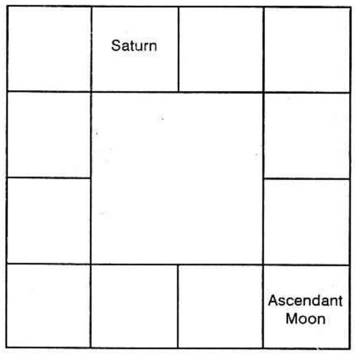

Q: - What is Kendra Adhipathyam? Are benefics, by nature, owning Kendra signs, always evil in their dasas? Do they invariably end one’s life?
Answer: “Kendra” is a Sanskrit word. It is also called Chatus taya and Kantaka. The sign in which the Ascendant (Lagna) falls, the fourth sign counted from the birth sign, the seventh sign from the ascendant (Lagna) and the 10th sign counted from the ascendant are termed Kendra signs or Kendra houses. It may also be used with reference to the position of the sign occupied by Moon or other planets. On such occasions, it is said that a planet is in a Kendra to Moon or in a Kendra to any other planet. By that, it is meant that they are conjoined with it in the same sign, or in the 4th, 7th or 10th signs counted from the sign occupied by the Moon or any other planet.
(1) The exact longitude of the Ascendant in a sign or that of the Moon is not at all taken for calculation. But only the sign in which the Ascendant falls is taken whether it is zero degree 1 minute or 29 degrees 59 minutes in that sign. So also when counted from Moon or any other planet, only the sign occupied, will be taken for judgment and not the Bhava (the House). In most of the horoscopes, the first part of a sign may be included in a House (or Bhava); Whether the planet is in the first part or in the second part of the Sign and in whichever house it is, it is not at all taken to find Kendrasthana, but only the sign in which the planet is found. For example: There are two births. One is born in Mithuna Lagna in the 29th degree and the other in the 3rd degree in Pisces (Meena) Lagna. The former has Moon in the second degree in Sagittarius (Dhanus), and the latter has Moon in the 25th degree in Gemini (Mithuna). In the first instance, Moon is said to be in the 7th Kendra even though the longitude is only 153 degrees and in the other case, the longitude is 112 degrees and Moon is said to be in the fourth Kendra.
In the first birth chart, as Gemini happens to be the Lagna, the Kendra houses are Gemini (the First), Virgo (the Fourth), Sagittarius (the Seventh) and Pisces (Meena the Tenth). In the second case, Pisces the Lagna is called Lagna Kendra, Gemini the fourth, Virgo the seventh and Sagittarius the tenth Kendra.
Meridian according to one’s latitude of birth may fall in the neighbouring sign to the tenth sign; yet the tenth sign alone should be taken as the Kendra sign. For example, one may be born in the second degree in Cancer (Kataka Lagna) at Lucknow. Actually, the meridian will be 24 degrees (Meena) Pisces. But, yet Mesha should be taken as the 10th sign or otherwise called Dasama Kendra House and not Pisces (Meena) as calculations are made, sign to sign and not house (Bhava) to house.
Therefore, when one counts the Kendrasthanas from Lagna, the Ascendant, the fourth sign, the seventh sign and the tenth sign are the four Kendra houses.
Each sign has its own lord and the owners or 1, 4, 7 and 10th houses are called as Kendra-Athi-Pathis. When one desires to assess the nature of a planet, whether it is a benefic or a malefic by owning a Kendra house, it is to be counted only from the Lagna and not from the Moon or any other planet.
It is said that Jupiter (Guru), Venus (Sukra), the waxing Moon (Chandra) and the unafflicted Mercury (Budha) are the natural benefics and if they happen to own either the first or the fourth or the seventh or the tenth house, they turn out to be unfavourable in their disposition. It is also added that if they occupy either the second or the 7th house, they cause untoward results and death to the native.
It is further stressed that Jupiter and Venus are more evil than Moon and Mercury when they own the Kendra signs.
The malefics by nature, Sun (Surya), waning Moon, Mars (Sevvai), afflicted Mercury (Budha), and Saturn by owning the Kendra houses become auspicious and will offer desirable results.
Kendrathipatya Dosha refers only to one’s health and longevity, whereas it will not prove to be either ineffective or undesirable as regards the results indicated by the houses they own.
Ascendant denotes one’s health and longevity. Lord of the Ascendant will invariable protect the native and improve his health and position provided he does not occupy the evil houses i.e., sixth or eighth or twelfth. Lord of the 4th house indicates one’s permanent possession, one’s vehicle and one’s mother. The 7th house shows the characteristics of the partner in life, the time of marriage, and other matters indicated by the 7th house. The 10th house indicates one’s profession, name, fame, reputation, honour, ancestral property, etc.
When one does research, taking the horoscopes of people born in Mithuna (Gemini) and in Virgo (Kanni), Mercury is considered to be a Kendhrathipathi by owning the Kendra houses, one and four for Gemini-born and one and ten for Virgo; Jupiter (Guru) becomes the owner of the 7th and the 10th houses to Gemini and 4th as well as the 7th houses to Virgo. People born in Gemini generally take up a profession indicated by Jupiter being lord of 10 and prosper, especially during Jupiter’s Dasa. One is born in Mrigasirish a Nakshathra third pada when Gemini was rising in the east. When he completed 22 years during Guru dasa, he appeared for the competitive examination and passed the I.A.S. at the first attempt itself. He got married at his age of 26 during Mercury sub-period he had a child born in Visaka Nakshathra (Jupiter’s star in Venus sign Libra). The birth of the child coincided with his promotion. During Mars sub-period he enjoyed another promotion and during Rahu sub-period he had the opportunity to go overseas. Horoscopes of such favourable experiences show that Kendrathipathya does not make a planet necessarily evil, offering only adverse and unfortunate results, even though there are a few instances of death during the Dasa or Bhukti of the Kendradhipathi.
Many with their Ascendant in Virgo (Kanni) having Jupiter in the 2nd or in the 7th house have out-lived Jupiter Dasa. Similarly, many people born in Aquarius (Kumba), Leo (Simha) and Scorpio (Vrischika) have Venus in the second or in the 7th house. They also enjoyed satisfactorily during Venus Dasa and a few are now running Sun Dasa, a few Moon Dasa, and a few Mars Dasa, etc. Therefore, one need not unnecessarily entertain any fear when an astrologer repeats the proverbial Kendrathipathya Dosha of Jupiter and Venus and says that they are very evil and one will not survive these Dasas. They will be at a loss if they come across with people out-living such so-called Kendrathipati’s Dasa. Dy. Prime Minister Shri Morarji Bhai Desai aged 75, Dr. A. Lakshmanaswami Mudaliar aged 85, Sir Dr. A. Ramaswamy Mudaliar aged 85.
A person born in Aquarius Ascendant (Kumba Lagna) and Poorvabatra Patha (Purattadhi) Nakshatra third Pada (Kumba Rasi) was able to have his own car only when he entered into Venus Dasa (who owns the fourth Kendra house) at his age of 52, whereas in the earlier Dasas he could not own even a bicycle. How far Venus as Lord of four has denied him the beneficial results which it indicates by owning the 4th house, is for you, to judge.
Another person born in Scorpio as Ascendant and in Jyeshta Nakshathra third pada gets married during Venus Dasa, Jupiter sub period (Bhukti-apahara) and Mercury sub sub-period (anthara) with a bride born in Poorvashada Nakshathra, Lord of which is Venus. Has Venus as Lord of seven denied him the pleasure through marriage in his Dasa? Also who is the lord of the constellation Poorvashada in which the bride is born? Is it not Venus? Yes, as the lord of 7, it has done its good, by offering the person a beautiful wife born in its own star.
It is known that the Lord of the eighth house is the worst evil but the exception is that the lord of 8th house cannot be a malefic if it is also owns the Ascendant or Lagna (Jathakchandrika) when the 8th house indicates one’s longevity, death, etc. When such an evil can be warded off by owning the first house, why will not Kendrathipatya Dhosha be mitigated if a planet owning either the 4th or the tenth house also happens to be the lord of the Ascendant or Lagna? We are of strong conviction that planets owning the Ascendant and not ill-posited can never do harm, but ever be a saviour just as a father will protect his child, whether he is a butcher or a robber.
It is also mentioned that a planet becomes evil by owning 3rd or 6th or 8th or 11th house; if they have any connection with Rajayoga Athipathis either as Lord of 9 or Lord of 10, they also will cause beneficial results in their sub-periods, in the Dasa of the Rajayoga Athipathi. From this, one can understand that Lord of 10 is capable of rendering the evil planets favourable. Lord of 10 is to offer the most desirable and lucky results causing Rajayoga. Therefore, if they own any other Kendra house they not only offer beneficial results indicated by the 10th house but also reduce the evil attributed to the results of the other Kendra house. For example, to Gemini Lagna, Jupiter is Lord of 7 and 10. He will invariably do good to the native in matters relating to the 10th house and to a great extent modify any evil indicated by the 7th house, if Jupiter is not afflicted otherwise.
Therefore, only when they own the houses 4 and 7 they may be considered as evil for one’s health as well as longevity and not to the other results denoted by the 4th or the 7th house.
I have heard people saying that the birth of a child at an auspicious time may modify the troublesome period of the father and bring him fortune; the favourable and the lucky period to wife will compensate for the miserable one of the partner; marrying a girl in whose horoscope birth of children is strongly indicated, will be advantageous for a man of evil influence unfavourable to the begetting of children. What is your opinion?
Answer: I differ, it is not correct to say that the varying fortunes of the parents get modified by the birth of the child.
Whatever a native is to enjoy or suffer from, is already pre-destined, and it will run its own course. Birth of children on a particular date is also already found in his horoscope. If one enjoys luck only after the birth of a particular child, it is clear that according to his own horoscope, the evil days has ended, and lucky days have started; unless this statement is correct, he cannot have a child at the commencement of his fortunate days. The birth of the child at the auspicious moment and the beginning of his brilliant times are indicated in his map. If fate is otherwise termed as, something written on the head by Brahma, then the Creator will not be going on changing the fate as and when one elects a propitious time to undertake any venture or by marrying or by birth of children, etc. Once written is never erased or modified.
If a person is to suffer, while his wife has to enjoy favourable results, according to their horoscopes, each will have the results as indicated by the planets at the time of their birth, and, one cannot cancel the other’s fortune or misfortune. If ‘A’ has married ‘B’ and ‘A’ runs the most unfavourable period, whereas ‘B’ has a lucky time, and if both were to go to races and bet, ‘A’ will be going on losing, whereas ‘B’ will gain. The loss of ‘A’ cannot be prevented by ‘B’. Nor the benefits to ‘B’ can be robbed away by the evil influence of ‘A’.
If the husband’s chart denies children and the wife’s chart promises many issues according to the prediction offered by an Astrologer, we have to say that the so-called Astrologer has not understood the science of Astrology, or there is something wrong somewhere. Anyhow, when an expert Astrologer were to scrutinise the horoscopes, he will boldly declare that both the horoscopes indicate birth of children or the children born, may be a "Jara Putra" or natural children. But, to say that marrying a lady whose horoscope promises children whereas that of her husband has no clear indication of it, is not wise.
Therefore, one's luck or ill-luck cannot be altered or modified, by electing a propitious time for the commencement of any venture, or by marrying one, or by birth of children, and so on. Everything is an occurrence as predestined.
It is correct to predict that a native will go overseas at the age of 26, and he will have a child at his 25th year of age, whereas it is not wise to say that because the native had a child at a brilliant time at his age of 25, it is due to the luck of the child the father had the fortune to go overseas. In the wife's chart, it will be shown that the husband will go overseas; in the boy's chart, planet will portray that the father will go overseas at his birth anniversary, and in his own chart, he will find that he has to go overseas at the age of 26.
If the results may be compared to that of a flower, then the indications from each chart, may be compared to the light thrown from the torch (horoscope). Nobody's light can change the flower to fruit or to seed. Every light wi.l show that it is a flower. Similarly, every horoscope will indicate the same result and never change it.
Excepting Sun and Moon, each planet is assigned two houses. If a planet, owning two houses, occupies a particular sign in the chart of a person, and if its dasa operates, what will be the nature of the results enjoyed by him? Is it the result of the houses owned by the planet, or that occupied by it? Or is it the result of the first house which it owns in the first half of its period and that of the other house, ruled by it in the second half? The results of which house will be favourable and which will prove to be evil? Or will both be good or both be bad?
Answer: Sun owns the house Leo (Simha) Moon rules Cancer (Kataka). Mars governs Aries (Mesha), and Scorpio (Vrischikam), Mercury is assigned Gemini (Mithuna) and Virgo (Kanni), Jupiter governs Sagittarius (Dhanus) and Pisces (Meena) Venus rules over Taurus (Rishaba) and Libra (Thulam), and Saturn owns Capricorn (Makaram) and Aquarius (Kumba). Rahu and Ketu are omitted by the Westerners but Hindus include them, though they have not agreed in allotting any house for them. There is difference of opinion about their ownership. Let us continue ourselves within these seven planets who also rule the seven days in the week.
The owners of a house indicate the source of certain results, as each house governs certain affairs. So, it is necessary to note for what houses counted from the ascendant, the planet in question is the lord, whichever house it may accidentally occupy, at the time of the birth of the native. For example, to Vrischika Lagna, Saturn is the lord of the third and the fourth houses, and whatever may be the house it occupies, Saturn has, by its lordship, the strength to give the results through the sources signified by the third and the fourth houses (i.e. brothers and mother; short journeys and permanent place of residence; communication and transport respectively). The same Saturn if it is in its own constellation to Mithuna Lagna-Gemini Ascendant, will be the lord of the 8th and 9th houses, and so Saturn as lord of 8th indicates mental worries, difficulties, sickness and mode of death whereas lord of 9 it shows Father (according to Hindus which, is to be followed), higher education, long journey, overseas, etc. In the case of Scorpio or Vrischika Lagna Saturn in its own constellation shows gain or loss, through brother as lord of 3, and through mother as lord of 4. To Gemini-borns gain or loss through father as lord 9, and through insurance, bonus, gratuity, legacy, etc., as lord of 8 are indicated. Also friendship or enmity with such a relative, is indicated by lordship. Favourable or unfavourable results are to be judged by the house which it occupies. Here, the question is whether it is favourable to the native of the chart or adverse to him; and also to the matters or relatives indicated by the houses owned by the planet? One is to note the various houses owned by a planet and include this also into account while interpreting the results.
The results of the house occupied by a planet will be indicated more by the planet which occupies the house, than by that which owns the house. In giving the results of a house, the planet occupying it is considered as the strongest. The owner is taken as next only in strength. The results of the house occupied by the planet will get modified by the planet which aspects it, and also by the planet which is conjoined with the lord and which aspects the lord of the house.
If a planet occupies a sign which is the 6th or the 8th or the 12th from the sign which it owns, it loses strength to offer such results as are indicated by that house, but will give results just opposite to the indications of the house owned by it.
1. If the 6th house indicates dispute and drain of purse, the 6th therefrom shows harmony, friendship and profit which is the 11th from the ascendant. if the 8th house denotes obstacles, hindrance and difficulties, the 8th to the eighth denotes "Sahaya", assistance and courage. If the 12th house shows loss the 12th to the 12th house shows gains, by that, it may be observed that planets occupying a sign which is 6 or 8 or 12 to what it owns, will offer results opposite to what they indicate by ownership. Lord of 1 shows health. If he occupies the 6th house, it indicates ill-health to the native. If it occupies the 8th longevity is not much promised. If it is 12, he will spend away whatever he has, and the planet does not allow him to continue to live in his own place and keep up the bank position.
2. The occupant is stronger than the owner of the sign:
a. only when the lord of the sign does not gain more strength by occupying its exalted sign or by being Vargothama,
b. when the lord of the sign is not conjoined with the planet or is occupying its other sign, and
c. when the occupant is exalted, whether the owner is in its own sign, or exaltation or Vargothamamsa.
3. The occupant is weaker than the owner:
a. if the occupant is in its enemy's camp or neecha, i.e., debilitated.
b. If the lord of the sign is exalted and the occupant is not,
c. If the lord of the sign is conjoined with the planet in its own sign and the occupant is not exalted there i.e., the owner is in swakshethra, whereas the occupant is neither exalted nor Vargothama there.
For example, if Moon and Jupiter are conjoined in cancer (Katikam), moon, even though it is in its own sign, yet the exalted Jupiter is stronger in giving the results (in its period) indicated by the house Cancer (Katikam) than what Moon can do in its period.
Mars and Moon conjoined in Cancer denote that Moon is stronger.
Moon's exaltation in Taurus (Rishaba) and Jupiter exalted in Cancer (Kataka) and Venus exalted in Pisces (Meena) in a horoscope, indicate that Jupiter, the tenant, will give the results of the house Cancer in his period, much more than Moon who rules Cancer; the results indicated by Taurus to that native will be offered by Moon, as he occupies, to a greater extent, in its period, than Venus, the lord of the Sign; Venus bestows on him the results indicated by Pisces (Meena) to a greater extent, that Jupiter who owns the house, in Venus periods, than what he enjoys in Jupiter's periods and sub-periods. That is, if the strength of the planets remains more or less the same by their, occupation, then the occupant is really stronger than the owner in offering the results of the house to that person, whenever its periods and sub-periods operate.
The results of the house given by the planet occupying a house will be modified by its nature, ownership of the house, and other connections, like conjunction with, or aspect from other planets.
Nature of the planet: If lord of 3 is in 11 and its period is running, then he will gain (11th house) through his brother (3rd house). If the owner of the third house is Saturn, then the brother who helps him will be economical and calculative (nature of Saturn), whereas if the third house is ruled by Mars, the help will be received with pleasant surprise and the brother will be extravagant, and over-liberal (nature of Mars). Jupiter as lord of 2 in 11 indicates gains by lawful means (nature of Jupiter), whereas Saturn as lord of 2 in 11, may give profit by fair or foul means (nature of Saturn). So, the nature of the planer also should be included when one interprets the results.
Ownership of various houses: Again the ownership of a house suggests, through which source he will have the gain or loss. If lord of 5 in 11, one can predict that at the time he runs the period of the lord of the 5th house who is in 11, the person will have the gains through speculation or cinema or pleasurable pursuits or through children, as these are indicated by the 5th house. So, the occupant offers the results of the house it occupies including the above indication.
Let us see how the results of the house it owns, will improve or get destroyed.
If it is either weaker or stronger than the planet, occupying its house, or if there is no planet in its house then one is to note the relative disposition between this planet and the houses it owns. If it is not in 6 or 8 or 12 from the house which it owns, it will give the results of the house in the manner which the house indicates. But if it occupies a sign 6 or 8 or 12 from the house it owns, the planet will give adverse results to the matters indicated by the house.
Suppose one's Lagna is Scorpio (Vrischika) and Saturn, the lord of the third and the fourth houses, occupies the 11th house Kanni (Virgo), then the matters indicated by the third house, will flourish, as it is in the ninth from the third house, and it is a very favourable disposition. But during the period of Saturn the matters indicated by the fourth house will suffer. Fourth house indicates mother, the eighth from it is the 11th house. So, mother will have difficulties and worries though the native will gain then through brother. The native may study in a school and he may receive a letter from the mother that she is ill, and also money order remitted by her, whereas the younger brother may write saying, that he has got a seat in the college for higher studies, or that he is selected to go overseas. Here the mother will send money and not brother, because it is only to the fourth house, the 11th house happens to be the eighth. But to the third house, it is the ninth. His purse cannot be drained. Brother and correspondence (indicated by the third house) give him pleasure, (shown by the 11th house).
Further, one having lord of 3 in 11, may have gains through editing, publishing, publicity, correspondence, or working as a sales representative, agent, or by making short journeys or through youngsters and neighbours. Further the third house results also will thrive, and brother will have prosperity. But the lord of the fourth house, while occupying the 11th house, is in the 8th from its own. In such cases, the native, no doubt, will gain through the 4th house matters i.e., he may gain through permanent possessions, through mother (according to Hindus, which alone is to be followed) and also by dealing in vehicles, etc., or through produce of mine. But mother's health will be affected and her mind will be disturbed.
Similarly, Saturn as lord of 6 and 7 occupying the 11th house shows that he may come out successful in the litigation, which will end in that planet's sub-period, whereas his partner may have a child born at that time, as 11th house is the 5th from the 7th.
Therefore one has to note whether the planet which occupies a beneficial house in the chart, is in the 6th or the 8th or the 12th from the house which it owns or occupies a favourable position from its house.
If the house occupied happens to be 6 or 8 or 12 from the house which it rules, the indications of the house which it governs, will turn contrary; otherwise-through the matters indicated by the other house the native will gain.
If the house occupied is favourable to one of the houses owned by the occupant, and unfavourable to the other, then, not only will he gain through the house to which the planet is in a favourable position, but also the results of the house, owned by the planet, will prosper.
But if the house occupied is unfavourable to its own house, the results of the house owned will suffer, deteriorate and the relatives, indicated by that house, will undergo difficulties, when the native runs the period of the planet. These results will not operate throughout one's lifetime. They can be enjoyed only when its period runs.
If the planet may be compared to a light, the house it occupies to that of a coloured slide (the colour depending on the house), then, the extent of the result will depend on the strength of the planet, and the source of the result will be indicated by both the houses which it owns, and its Karakathvam, i.e., certain matters and events of which the planet is the chief governor.
The nature of the result will depend on the house it occupies. As per Krishnamurthi Padhdhati, the nature depends mainly on the lord of the constellation. The occupation will show gain or loss, whereas the house owned shows the source. It is similar to the light which illuminates the slide, and throws that colour of the slide, indicating the house occupied.
House - Vacant: If a house is not occupied at all, then the owner of the house, the planets aspecting the house, indicate the results of the house. They will get modified by the planets which conjoin or aspect the lord of the house. According to Krishnamurti Padhdhati, planets in the constellation of the lord of the house will bestow the matters signified by that vacant house.

A father is born in Virgo Ascendant (Kanni Lagna) and he runs Sani Dasa (Saturn's period). His Nakshatra is Chithra 1st pada, and Moon occupies the Ascendant. at the time of birth, Saturn was in Aries and in the 8th house. In this instance, one is to interpret as follows:-
Saturn owns Capricorn and it is the 5th house from the Lagna, Virgo. By occupying Aries, it squares the 5th house. (Various authors have declared that planets, evil by nature occupying the 4th or the 8th house, spoil the results of the house and will do harm to that native). Hence, difficulties experienced by the person, will be related to, and signified by, the 5th house. Thus he loses in games and incurs loss through his children, especially the first issue. His son will not keep mental equilibrium and good health. He will be worried about his self-acquisition. (Saturn also owns the second from the 5th house). Saturn as lord of 6 in the 8th, forms favourable aspect with its house from the 8th, and hence he will have to raise loan, and he will not find it difficult to do so, as the disposition is favourable.
If a planet owns both the house of profit and that of loss in its period, during the sub-period of beneficial planets, he will then gain, and during the sub-period of the evil planets, he will lose.
Some divide the period into two halves, and predict that, during the first half of the period, the planet will be giving such results as are indicated by the house which is nearer to the ascendant, counting the houses from lagna, 1, 2, 3 and so on and the second half of the period will indicate the results governed by the other house. For example, if Jupiter owns the 5th and the 8th houses to the ascendant Leo (Simha), it is incorrect to foresee that the first half of Jupiter’s period will be good, because it will be the results of the 5th house, Dhanus-Sagittarius, and the second half of the period will be harmful, as it is the effect of the 8th house Pisces. Actually, he has not enjoyed anything during the first half of Jupiter’s period, except during Mercury sub-period. Whereas Venus, Moon and Rahu sub-periods, covering most of the second half of Jupiter’s Dasa, proved to be very auspicious, by giving marriage, promotion, children, voyage with family to foreign land and satisfactory increase in income, by keeping him in good cheer, and by making him feel jubilant, buoyant, and contented.
Some are of the opinion that the beneficial effects which result by owning a favourable house, will get cancelled, as it owns the unfavourable one also. This statement is not correct. He will have both the results experienced. He will gain through one source and also lose through the other source. In his ledger, he should have two entries, one crediting to his account and another debiting him. It will not pass on without giving both the results. The ultimate balance sheet may show zero. If one house denotes health, and the other house threatens accident, during its period, and the sub-period of an evil planet, he will meet with an accident and have some injuries and during the sub-period of a beneficial planet, he will have the cure and maintain good health. The good results of a house will not get cancelled by the evil results of the bad house, if a planet owns both the houses.
Malefics in 4, 6, 8 and 12 to any house, will destroy the indications of the house, whereas planets in other houses, improve the matters of the house.
Will a native born at a time, having Raja yoga in his horoscope, enjoy the yoga results throughout his life? Does the Raja yoga promise no difficulties to him and will he lead a princely and aristocratic life throughout?
Answer: Hindus alone judge the prosperity of a horoscope considering the various yogas present in it. The ancient Hindu astrologers have mentioned (a) certain combinations of planets, or (b) lords of certain houses, or (c) the relative disposition of a planet to the ascendant, or to the Moon are termed as Rajayogas, and such combinations will produce most brilliant results. Those who are born in the royal family will become Emperors and those born in the middle class family will attain power, be popular and prosperous, enjoying all the fruits of life in this world.
It is regrettable that the readings given by a few of the present astrologers who reproduce the slokas relating to the yoga, without considering whether or not all, the conditions mentioned therein fit in with the charts they have taken for reading, and have translated those slokas only which are pleasing to the consultant at the time of going through them, and do not mention about the unpleasant things indicated therein. But the beneficial results predicted do not come to pass. People, having similar combinations of planets, will be quoted by these astrologers, to arouse confidence in the minds of the consultant, without going into greater detail as to why, in their cases, events came true, while in the case of the querist, similar favourable results have not come about in spite of strong planetary combinations, indicating Rajayoga and the other planets occupying different houses.
There are a few important facts which are to be taken into consideration. A thorough study is needed.
1. One should note circumstances, environments and surroundings, under which a native is born.
2. Whether in his life time, he runs the Dasa of the planets which cause Rajayoga.
3. Whether there are planets in 6 or 8 or 12 to the planet producing Rajayoga.
4. Whether the planet causing Rajayoga is conjoined with Nodes, Rahu or Ketu or with lords of 6, 8 and 12.
5. Whether Rahu or Ketu occupies the sign owned by the planet which produces Rajayoga.
6. Whether he will live to the age at which the mutual dasas and bhuktis of the planets, producing Rajayoga will operate, and lord of 6 or 8 or 12 is not conjoined with them; or majority of planets are not in 6 or 8 or 12.
7. Whether the planet producing Rajayoga is not in the constellation (nakshathra) of the lords of 6 or 8 or 12, to them or in their sub.
It is said that person who has Rajayoga by the combination of a few planets, will have the following results–
“The person who has his birth in Rajayoga will be a king who will be accompanied by elephants, horses, litters, palanquins and the like, the roaring of the kettle drums and the sounds of the conch shell with a circular umbrella made of soft woolen cloth, held over him, praised by bards and minstrel, and solicited by eminent men with various kinds of presents in their hands. The person will enjoy all comforts in the company of many beautiful damsels”.
Honestly, the majority of these can be noticed, when some people, belonging to a few Indian communities, pass away and use such drums and conch shells, umbrella, palanquin, or cot, etc. But one should consider how many can become kings, though not of a country, yet at least at home, where normally they can be. How long can they continue to be so? And in a country where brothel is more or less eradicated, how can one be in the company of many damsels. Has he no other work?
The astrologer has to consider the limitations and then assess the extent to which the combination can do good to the native. If he were to interpret correctly, in the majority of the cases, where the other planets are not strong, and very favourably posited, but only this yoga exists, he can predict that the native will get over all the difficulties he had suffered from the time, the Rajayoga planet commences to operate and during its period he will be able to realise his ambition and fulfil his desire. He may enjoy desirable results, and look forward to a satisfactory advancement in his life. The percentage of improvement may be common to those, having the same Rajayoga, but the extent of its enjoyment will vary according to the environments in which he is born. A person, worth a million, may be having a lakh as profit for a year, whereas, another with a similar planetary combination born at the same time, in a middle class family, can have a few thousands or hundreds a year. The swelling in the little finger, due to witlow, will be proportionately less than the swelling in the thumb, when the witlow affects the thumb.
2. A person may not see the bright days at all in his life time, and pass away, if he does not run the period of the planets which cause such a Rajayoga.
3. Planets in 6, 8 or 12 to the planet producing Rajayoga, will destroy the beneficial results in their sub-periods in the dasa of the Rajayoga planet and in their periods the Rajayoga results will be absolutely absent. (Vipareetha Rajayoga is exempted).
4. Rahu or Ketu, in conjunction with any planet, will give the result of the planet, in their periods, whereas the planet gets much weakened, and the results offered by the planet will, accordingly, be moderate. If one can compare Rahu or Ketu to water, and the planet to milk, then the combination of the node with the planet, may be compared to mixing water with milk, when water gets the name milk, and also fetches a price. Therefore, those planets, which cause Rajayoga by being the lord of a house should not be conjoined with either of the nodes, Rahu or Ketu.
5. Generally, the results of a house and those of the lord of the house, are given by the planet occupying the constellation of the owner or the tenant. Of all the occupants, the nodes, Rahu and Ketu are the strongest. Hence, if Rahu or Ketu were to be in the house which is owned by the planet, producing Rajayoga, then one can expect such results mostly during the period of the node and in the period of the planets in the constellation of the node and it will not be enjoyed in the period of the planet to one’s satisfaction.
6. Lords of 6 or 8 or 12, conjoined with planets producing Rajayoga will rob away the beneficial results of the yoga adhipathis.
Let us take, for example, one who is born with Aries as his ascendant, and Moon and Mars posited in Kumbha (Aquarius). The combination of Moon and Mars termed as Chandramangala yoga, has to produce favourable results to him. It will not be correct to argue that this native will become an engineer and will amass wealth due to this yoga.
An astrologer should first note the nakshatra in which he is born, what dasa he has at the time of birth, and what dasas follow. Next, he has to find out in what age, he will enter into the dasa of the yoga-producing planets. In this case, even if one born with Moon in the first degree of Kumbha of Aquarius, he can enjoy the period of Mars to a maximum of 3 ½ years during his life time: then he can have Moon dasa only after 96 ¼ years of his age. If one would have been born when Moon was at the 30th degree of Kumbha (Aquarius), then he would have had 4 years of Jupiter dasa to start with and only at the age of 69, he will enter into Moon dasa. Therefore this, native would not have become an engineer or earned and saved money as an engineer, because of Moon/Mars combination. A yoga caused by two planets will be enjoyed only when their periods operate in one’s lifetime.
If there is a Rajayoga in a person’s chart, it does not guarantee that he will never suffer in his life, and that he will ever prosper.
SWA BHUKTI
I am, at present, running Saturn dasa Venus bhukti. During Saturn dasa, Saturn bhukti, in those three years and three days, on the whole, I was fortunate. My salary was increased satisfactorily. Status also very much improved.
A student of astrology threatened me saying: “If a planet does good to a person in its swa-bhukti, i.e., own Bhukti (own sub-period); the remaining eight sub-periods will be harmful.” Is it a fact? What is your opinion and scientific explanation?
Answer: The statement of that student may be forgotten. That is incomplete and incorrect.
Let me suggest to you the best method of finding out the beneficial sub-periods and also the adverse ones.
1. Have your horoscope correctly cast.
2. Have a dasa-bhukti reference table in which the period of Saturn bhukti running for three years and three days is sub-divided and let the duration of each antara of sub sub-period be also calculated and submitted for your use.
3. From your diary, note down in which antara (sub sub-period) you had fortune and in which antara you had disagreeable results. Similar results alone will repeat when their bhukties operate for longer periods.
Suppose, you entered Saturn dasa on 10-3-1956. The first sub-period, otherwise called bhukti or apahara, is ruled by Saturn, the dasa lord himself, for 3 years and 3 days from 10-3-56. So, from 10-3-56, you had Saturn dasa, Saturn bhukti. Then, for 2 years 8 months and 9 days from 13-3-59 to 22-11-61 Saturn dasa, Mercury bhukti operated. For 1 year 1 month and 9 days from 22-11-61 to 1-1-63, Saturn dasa Ketu bhukti had been running. Then in Saturn dasa of 19 years
from 1-1-63 to 1-3-66 Venus bhukti,
from 1-3-66 to 13-2-67 Sun bhukti,
from 13-2-67 to 13-9-68 Moon bhukti,
from 13-9-68 to 22-10-69 Mars bhukti,
from 22-10-69 to 28-8-72 Rahu bhukti and finally,
from 28-8-72 to 10-3-75 Jupiter bhukti.
If you sub-divide Saturn bhukti in Saturn dasa, Saturn antara extends from 10-3-56 to 1-9-56.
Saturn bhukti Mercury antara 1-9-56 to 4-2-57
Saturn bhukti Ketu antara 4-2-57 to 8-4-57
Saturn bhukti Venus antara 8-4-57 to 8-10-57
Saturn bhukti Sun antara 8-10-57 to 2-12-57
Saturn bhukti Moon antara 2-12-57 to 3-12-58
Saturn bhukti Mars antara 3-3-58 to 6-5-58
Saturn bhukti Rahu antara 6-5-58 to 18-10-58
Saturn bhukti Jupiter antara 18-10-58 to 13-3-59
Note all the events between 10-3-56 and 13-3-59. Suppose you had promotion in January, 1957, it was in the fag end of Mercury sub sub-period. Therefore, during Saturn dasa, Mercury sub-period (or bhukti) which ran between 13-3-59 and 22-11-61, in the last portion, you ought to have been promoted. If during Saturn dasa, Saturn bhukti, Ketu anthra, running between 4-2-57 and 8-4-57, if any of your close relatives had passed an anxious time, then mostly the same person or a similar relative will again cause anxiety during Saturn dasa, Ketu bhukti in between 22-11-61 and 1-1-63. If during Venus sub sub-period between 8-4-57 and 8-10-57 you had your wedding, during Venus Bhukti, between 1-1-63 and 1-3-66, you will lead a happy and harmonious life with your wife. Or, if you had fallen in love in the middle of 1957, then in Venus bhukti, it will be intimate and marriage will take place. If during the next sub sup-period of Sun between 8-10-57 and 2-12-57 you were transferred to a mining department, then during Sun bhukti, you will surely have a decent promotion in such a department. If during Moon’s sub-sub period, your younger sister got married, then during Moon bhukti, between 13-2-67 and 13-9-68, she will lead a pleasant life and she may give birth to a child. If during Mars sub-sub period, between 3-3-58 and 6-5-58 you purchased a plot of land with the idea of constructing a house at a later date, you will surely build one during Mars bhukti, between 13-9-68 and 22-10-69. If Saturn dasa, Saturn bhukti, Rahu antara, caused you trouble through eczema; you can look for similar troubles in Saturn dasa, Rahu bhukti, between 22-10-69 and 28-8-72. If you had a child in Saturn dasa; Saturn bhukti, Jupiter antara, between 18-10-58 and 13-3-59, the child will be fortunate when you run Saturn dasa, Jupiter bhukti between 28-8-72 and 10-3-75.
Why not? Any event in your life is indicated by the relative position between two planets, or one planet and the cusp of a house. They are the significators and they indicate the results. Such occurrences will happen to you whenever those planets jointly rule your time. Similar ones will repeat whenever their periods again and again operate.
This is the simplest and most accurate method of finding out how the dasa will be, provided your horoscope is correct.
There are many general rules. They should not be strictly applied. Modifications are many. They are to be included.
When a particular dasa runs for many years, during that period, by transit, all the planets move in many signs and houses. They will indicate separately some results. By progression, Moon will be forming various aspects. Other planets also will form some aspects. They will only confirm the results obtained by following the simplest method suggested by me. There will never be a contradictory indication. They will agree. That is the wonder of vimshodhari system.
Suppose one runs Saturn dasa, Saturn bhukti and Saturn transits in the 8th house, or happens to be ardhaashtama (the 4th), or there is seven and a half years Saturn otherwise called sade-sati one should not conclude that the time is evil and the person will suffer. There are various other aspects to be taken for consideration before passing a judgment.
For beginners my suggestion is the best, fairly accurate and the simplest.
An author has said that if a planet were to offer Rajayoga result and has also to cause Maraka, it gives the yoga first and then alone death. By that, the author means that the Rajayoga planet is your strong benefic and hence it allows you to enjoy the fruits of this life to your satisfaction and then alone, it will do harm to your life. Even in law, there are many rules. The spirit of the law is to be properly understood. One has to apply it properly and be practical. Analytical study, correct intuition and good judgement are needed for successful astrologers. Good astrologers will have in their horoscopes strong and favourable Mercury conferring all the qualities of a good astrologer. Moon-natives, devoid of beneficial aspects from Mercury, cannot become scientific astrologers. Moon may be compared to a mirror and Mercury to a lens. Moon can simply reproduce those which are committed to memory, just as a mirror shows the image of the object without any alteration or improvement. But a lens is different. So also, unlike Moon, Mercury gives sharp intelligence, thorough study, practical application and correct judgment.
Read the results given by sages for the sub-periods of Jupiter in Jupiter dasa, Mercury bhukti in Mercury dasa, Venus bhukti in Venus dasa, and so on. All the authors give pleasant results. Why? They are natural benefics. For you, Saturn, by ownership becomes a benefic.
Further, note down whether the entire period of two years, one month and eighteen days of Jupiter bhukti, in Jupiter dasa was good. No. only certain sub-sub-periods in Jupiter bhukti would have been favourable while a few might have been troublesome. Yet, on the whole, it will be good. If you observe, you will understand that the antaras of those planets which were good in Jupiter bhukti, will prove to be very beneficial to a great extent when their bhuktis in Jupiter dasa operate. Similarly, the adverse antaras of the few planets will be undesirable during their bhuktis to a great extent.
A thorough study of Dasa system, progression and annual horoscope are needed to pass correct judgment.
As proper and exhaustive, explanation is needed and each may cover many pages, separate books on “Dasa Phala Nirnayam”, “Progression”, “Annual Horoscope” will be published one after the other if possible by me or by my son guided by me,